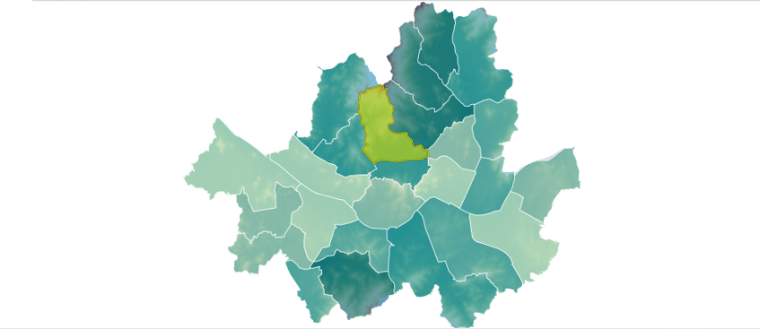

래스터 구역 통계¶
폴리곤 피처의 각 영역별로 래스터 셀값에 대한 요약통계(셀의 개수, 합, 최소값, 최대값, 평균, 표준편차 등)를 계산합니다.
Syntax
ZonalStatistics (SimpleFeatureCollection zoneFeatures, String targetField, GridCoverage2D valueCoverage, Integer bandIndex, ZonalStatisticsType statisticsType) : SimpleFeatureCollection
Input Parameters
Identifier |
Description |
Type |
Default |
Required |
zoneFeatures |
구역을 정의하는 폴리곤 레이어입니다. |
SimpleFeatureCollection |
✓ |
|
targetField |
값을 저장할 필드입니다. |
String |
val |
|
valueCoverage |
통계를 계산할 값을 가진 래스터 레이어입니다. |
GridCoverage2D |
✓ |
|
bandIndex |
0부터 시작하는 밴드 인덱스, 기본 인덱스는 0입니다. |
Integer |
0 |
|
statisticsType |
계산할 구역 통계 유형입니다: Count, Sum, Mean(기본값), Minimum, Maximum, StdDev, Range. |
ZonalStatisticsType |
Mean |
Process Outputs
Identifier |
Description |
Type |
Default |
Required |
result |
출력 레이어입니다. |
SimpleFeatureCollection |
✓ |
Constraints
zoneFeatures 파라미터는 반드시 Polygon 또는 MultiPolygon 타입이어야 한다.
target 파라미터는 설정하지 않으면 val 값을 기본으로 사용한다.
bandIndex는 래스터의 밴드가 여러 개인 경우 0값을 기본으로 사용한다.
statisticsType: Count, Sum, Mean(기본값), Minimum, Maximum, Range, StdDev
statisticsType 파라미터는 다음의 옵션을 사용할 수 있다.
옵션
설명
Count
셀의 개수
Sum
셀의 합
Mean
셀의 평균값(기본값)
Minimum
셀의 최소값
Maximum
셀의 최대값
Range
셀의 범위
StdDev
표준편차
Examples
